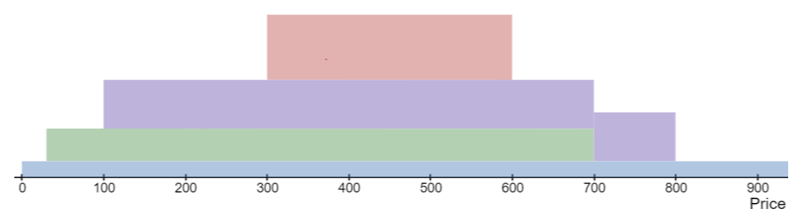

This article may be updated from time to time. See a complete history here.
It is not from the benevolence of the butcher, the brewer, or the baker, that we expect our dinner, but from their regard to their own interest. We address ourselves, not to their humanity but to their self-love, and never talk to them of our own necessities but of their advantages – Adam Smith, Wealth of Nations
In his foundational work on economics Adam Smith presented the concept of the invisible hand of the market, which is the idea that individuals – all following their own selfish desires – can nevertheless contribute to the greater good of society.
So I hope you’ll forgive me if I write this from the selfish perspective of someone who dearly wanted to land a bug bounty. Also, everyone loves a good heist story even if it only occurs in fiction… or is executed in simulation.
That being said, I’m delighted that the bug I discovered was responsibly disclosed, no user funds were lost, and its mitigation and re-release of the contracts handled so exceptionally well by the Kyber Network team. Working together, a greater good for the Kyber Network community has been realised.
Earlier this year I found a critical bug in Sushiswap’s unreleased Concentrated Liquidity pools. However, rather than use their own code, they decided to go with a vanilla fork of Uniswap V3. This fact alone would have disappointed me. But the hack itself was so sweet, so epic, that the whole experience left me crestfallen. I’ll post details of this exploit soon.
However, there was a “silver lining” to the whole experience: I developed a deep knowledge of concentrated liquidity projects. The question was, could I leverage this somewhere else? I cast my eyes over a few concentrated liquidity projects on Immunefi but – if hadn’t been for the fact I didn’t receive a bounty from Sushiswap – I may never have searched more widely.
One day I suddenly remembered a conversation I’d had with a judge from Code 4rena about a project he’d once worked on: KyberSwap.
I don’t know how it was that I wasn’t more aware of them. In their own words, they are an established OG DeFi blue chip project that had market dominance in 2019. In 2022 they made a comeback in top DEX rankings with a new Concentrated Liquidity Market Maker (CLMM) protocol (launched in July 2022) called Elastic Pools. When I first visited their app they had a staggering $125M in TVL. From a bounty hunter’s perspective this was a project well worth looking into.
So I took a look at their ks-elastic-sc repo (now ks-elastic-sc-legacy).
To get the most out of this post, I’m going to have to teach you a little bit about how Concentrated Liquidity Market Makers (CLMMs) work.
In an ordinary AMM any liquidity added to a pool can be utilised by traders regardless of the price. In a CLMM, LPs only provide liquidity in narrow price bands. The tokens they provide as liquidity will only be used if the current price falls within this narrow price range. This has a couple of advantages:
More can be learned about these concepts in the KyberSwap docs, Uniswap V3 docs and a paper comparing CLMMs vs other AMMs.
In much the same way that floating point numbers are a discrete subdivision of the infinite real number line, in a CLMM the price range is discretely subdivided into ticks. These ticks are denoted by a number but, for a given tick t, the price at that tick is equal to 1.0001t. An LP can provide liquidity between two ticks, as long as the two ticks are an even multiple of the tick spacing.
For example, given a tick spacing of 10, an LP could provide a liquidity in the price range $1.00 - $1.22 by depositing liquidity in the tick range (0,2000) (because 1.00010 = 1.00 and 1.00012000 ≈ 1.22).
I will use the diagram below to illustrate a few concepts of CLMMs.

The pool consists of two tokens: Token Zero and Token One. The current price is not shown but let’s say it’s at tick 250.
The diagram represents the depth of liquidity in various tick ranges. Three LPs have provided liquidity it different ranges: green in the range (30,700), purple in (100,800) and red in (300,600).
The depth of liquidity is deepest in the (300,600) range since all three deposits overlap with this range.
When an LP deposits liquidity this is known as minting.
a swap by a trader could cause the price to shift enough that a tick range boundary is crossed.
For example:
there are important invariants that any CLMM should always respect
In order to understand the exploit I’m going to have to introduce a few fields of the poolData storage variable.
currentTick might not sit on a valid tick range boundary
(given various values of the tick spacing
tickDistance).currentTick. Will always be an even multiple of
tickDistance.sqrtP on tick range boundariesGiven a price one can calculate the nearest tick that corresponds to it using TickMath.getTickAtSqrtRatio.
In general the following system-wide invariant holds:
poolData.currentTick == TickMath.getTickAtSqrtRatio(poolData.sqrtP)However, there is one notable exception to this invariant. That is
when poolData.sqrtP sits right on a tick.
i.e. poolData.sqrtP is equal to TickMath.getSqrtRatioAtTick(t)
for some tick t.
This is desired and expected behaviour but the CLMM needs to be very careful about how it handles this case. As you might have guessed, the exploit involves this edge case.
I found a way to mint liquidity and then have that liquidity added again. I’ll call this a double-add.
The trick was to get the system in a state where
currentTick was sitting on a valid tick range boundary and
nearestCurrentTick == currentTick - 1. You then mint
liquidity in the range (currentTick, currentTick + n) for
some n. Since the current price, sqrtP, is
just within the tick range the liquidity is added to the
baseL storage variable. This is all expected behaviour.
However a bug manifests itself when you try to do a one-for-zero
swap. Since nearestCurrentTick == currentTick - 1 the next
tick, swapData.nextTick
will be calculated
as currentTick. This is not correct. It should be
calculated as the next initialised tick range boundary to the right of
currentTick.
Since the price is sitting right on the tick range boundary even a minimal swap will cross it. This causes the liquidity just added to be added again!
To be more precise: - before minting, crossing the tick boundary
would have added l0 liquidity. - Minting adds
l1 liquidity to poolData.baseL but it also
adds liquidity to the tick range. This means crossing the tick boundary
will now add l0 + l1 liquidity. - We then cross the tick
boundary with a small one-for-zero swap. In total,
l1 + l0 + l1 liquidity has been added by minting and
crossing. This is equal to l0 + 2 * l1 so you can easily
see that l1 has been double-added.
Now that we can double-add liquidity on demand, what can we do with it? It might not seem like much but it allows you to almost entirely drain the liquidity pool of its tokens. However, this is only feasible with very deep pockets… or a flash loan.
Let me make a quick observation. Although flash loans can be used for many legitimate purposes, I find it almost comical that in the Applictions of Flash Loans section of the Aave docs there isn’t a bullet point saying “manipulating the price of a DEX in order to unfairly gain from trading”. Flash loans have been a crucial part of many hacks, transforming them from something only a whale could dream of executing to something anyone could execute.
The exploits proceeds as follows. Using a flash loan, do a large zero-for-one swap crossing many tick range boundaries along the way. This bids down the price of Token Zero i.e. you can buy a lot of Token Zero for relatively little Token One. But lowering the price requires swapping a lot of Token Zero.
You then double-add liquidity. Crucially, you must add enough liquidity so that when it is (incorrectly) double-added, there is enough liquidity to drain all of Token Zero from the pool. This is done by a large one-for-zero swap. Since the price of Token Zero has been bid down you end up getting it at a very good price, well below market price.
This results in a massive profit of Token Zero with which you can easily repay the flash loan. Depending on how much you bid down the price of Token Zero, you can drain almost all of Token Zero from the pool while leaving only a smattering of Token One in the pool.
Let’s look at a case example involving a hypothetical ETH-USDC pool. For simplicity’s sake let’s say the current price of ETH is $2000.
We start with a pool containing 1000 ETH and 2,000,000 USDC
Using a flash loan we swap 5000 ETH for USDC, getting the price down to $1 ( tick 0) There are now 6000 ETH tokens in the pool but almost no USDC.
We now calculate how much liquidity would need to be in the range (0,n) for some small n in order to completely drain the pool of 6000 ETH (in this narrow tick range).
We mint half that liquidity and then perform the double-add exploit. Since the price of ETH is $1 this doesn’t require a whole lot of ETH and USDC.
We now swap (about) 6000 USDC for 6000ETH. There is low price impact because the minted liquidity range was so narrow.
We now pay back the flash loan and keep approximately 1000 ETH as profit as well as the USDC we received in step 1.
So, how exactly did I get the sqrtP and
currentTick to sit right on tick range boundary? And then
how did I get the system in a state where
nearestCurrentTick == currentTick - 1?
Getting sqrtP/currentTick to sit right on a
tick range boundary was easy using the limitSqrtP
field of the IRouter] interface’s ExactInputSingleParams
struct.
It was then simply a matter of calling Router::swapExactInputSingle with the correct parameters.
As for the question of how we got
nearestCurrentTick == currentTick - 1, that was a little
bit more tricky. Through trial and error, I found that you could do a
small one-for-zero swap to cross the tick range boundary, and a small
zero-for-one backwards. Working out the exact amounts to swap was a
little bit difficult so I used Foundry’s snapshot
cheat codes and a binary search.
When I submitted my Proof of Concept I didn’t actually know the root cause of the bug. I’d found that doing a small swap (forwards and backwards) put the system in the state required for the double-add exploit, but I didn’t know exactly why.
The Kyber Network team determined that the root cause was this snippet of code at Pool.sol:405-408
405 if (swapData.sqrtP != swapData.nextSqrtP) {
406 swapData.currentTick = TickMath.getTickAtSqrtRatio(swapData.sqrtP);
407 break;
408 }It turns out that the swap backwards is actually split into two sub-swaps. The first sub-swap crosses the tick range boundary. Then the following happens:
currentTick has the
correct value (i.e. nearestCurrentTick == currentTick)
because of line Pool.sol:409swapData.sqrtP, does not change. When Pool.sol:407
is executed this causes the currentTick to be incremented
by one leading to nearestCurrentTick == currentTick - 1.
The double-add exploit is now possible.The fix for this is quite simple. The code above needs to be amended to:
if (swapData.sqrtP != swapData.nextSqrtP) {
if (swapData.sqrtP != swapData.startSqrtP) {
// update the current tick data in case the sqrtP has changed
swapData.currentTick = TickMath.getTickAtSqrtRatio(swapData.sqrtP);
}
break;
}This has been done in the new ks-elastic-sc repo at Pool.sol:413-419 and I have verified that the double-add exploit is no longer possible.
I wrote a Proof of Concept in Foundry using a fork of the state of the system on Ethereum Mainnet at block height 17050000. The PoC uses Aave flash loans to drain most of the tokens from the wstETH-ETH pool.
For now, the repo is private but will be released shortly. Please come back to this post for the link in the near future.
I submitted the bug to Kyber Network via email on 17 April 2023. After quickly establishing contact we continued the discussion via Keybase. I disclosed the full details of the bug along with the executable PoC.
The bug was confirmed as valid by 2023-04-17 06:06 UTC. To my delight – despite not having a defined bug bounty program – the fine team at Kyber Network immediately offered a bug bounty. Given that $100M was locked in Kyberswap’s Elastic Pools the potential loss of user funds was very close to that figure.
For critical vulnerabilities most bug bounty programs on Immunefi offer 10% of economic damage or a substantial maximum cap. 10% of economic damage would have been an enormous bounty. Instead I negotiated for lower, but still substantial maximum cap.
What happened next? In my honest opinion, Kyber Network handled the situation exceptionally well. The easiest way to prevent the double-add exploit was to disable minting of new liquidity positions. However, the pools could still be used to swap as per normal.
Kyber Network then informed its users through all of its public channels that LPs should remove their liquidity from the pools before a freeze of the Elastic service. It’s worth noting that even though the potential attack was completely prevented by disabling minting of new liquidity positions, Kyber Network still chose to proactively warn users to remove their liquidity as they prepared the new smart contracts for Elastic.
It was a marvel to watch the total liquidity in the pools drop from $100M to around $2.5M in less than 48 hours. To ensure the safety of the LPs, the Kyber Network team stopped the Liquidity Mining program and took a snapshot with full states of the pools and farms so that all farmers could receive their full rewards. They also pushed announcements across all channels for LPs to withdraw their liquidity from the pools as soon as possible.
And they managed to do this without inducing any kind of panic. As a third-party observer it was great to observe their users’ questions being promptly and patiently answered on Discord and Twitter.
As can be clearly seen in the Discord channels, the Elastic pools are sorely missed by their users, but Kyber Network have decided, rightly, that security must come first. After making the necessary fixes to the bug I found, they sent out the codebase for another audit with Chain Security.
The re-release of the Elastic Pools has been delayed until now to ensure that the double-add exploit is definitely fixed, and that there are no other issues in the codebase. At the same time, Kyber Network has been pushing LPs to remove their liquidity before relaunching the Elastic protocol and the release of this post-mortem.
My confidence in Kyber Network’s platform and their security process is high enough that I have decided to invest some of my own funds into the re-released Elastic pools, and take advantage of their increased rewards from farming. This was partly spurred on by enthusiastic comments by one of their users on the Discord channels. Apparently they have made very good returns on Kyberswap Elastic because of their competitive APR.
I will leave you all with an observation on bounty hunting.
It is certainly possible to be a good bounty hunter by learning a broad range of exploits and diligently seeking them out. However, it is also possible to go deep, to develop expertise in projects that no one else has.
Bounty hunters are often told that they need to be fast so that they are not “beaten to the punch” by others. This is probably true for the bounty hunter that has focused on breadth.
But I’m not sure this is true for those who focus on depth. While this bug would eventually have been found, I definitely felt like I could take a slightly more leisurely pace while learning about concentrated liquidity projects. The path I was taking was a relatively untrodden one, so I did not feel like I had to rush. Consequently, I developed a deep enough understanding that I was able to uncover previously unseen bugs.
Anon, if this alternative path sounds appealing, it might well be worth a try.